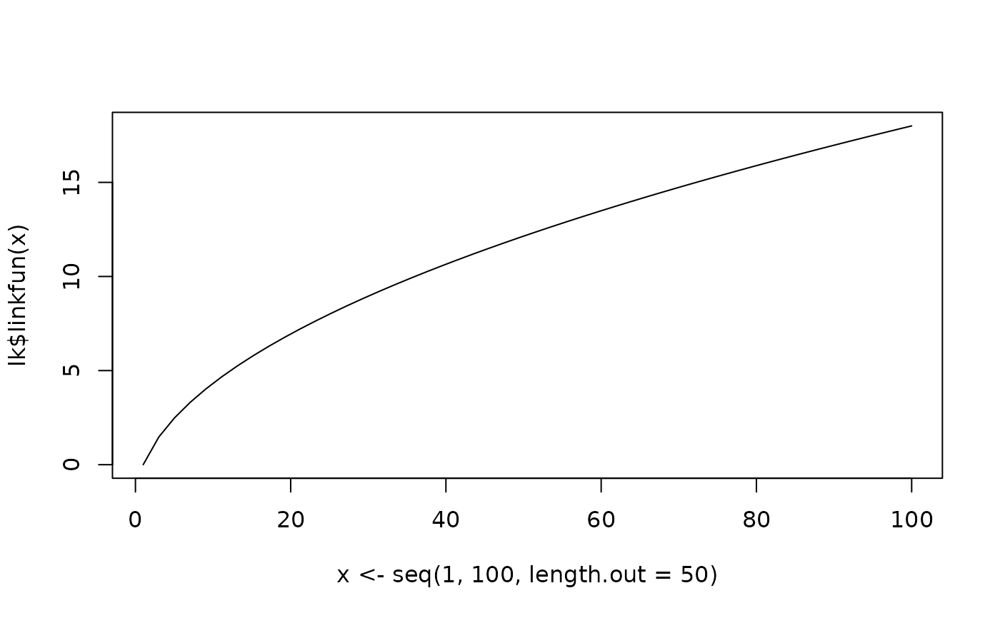
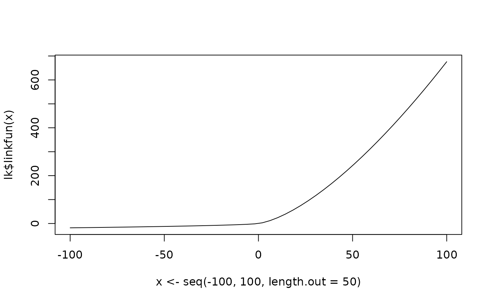
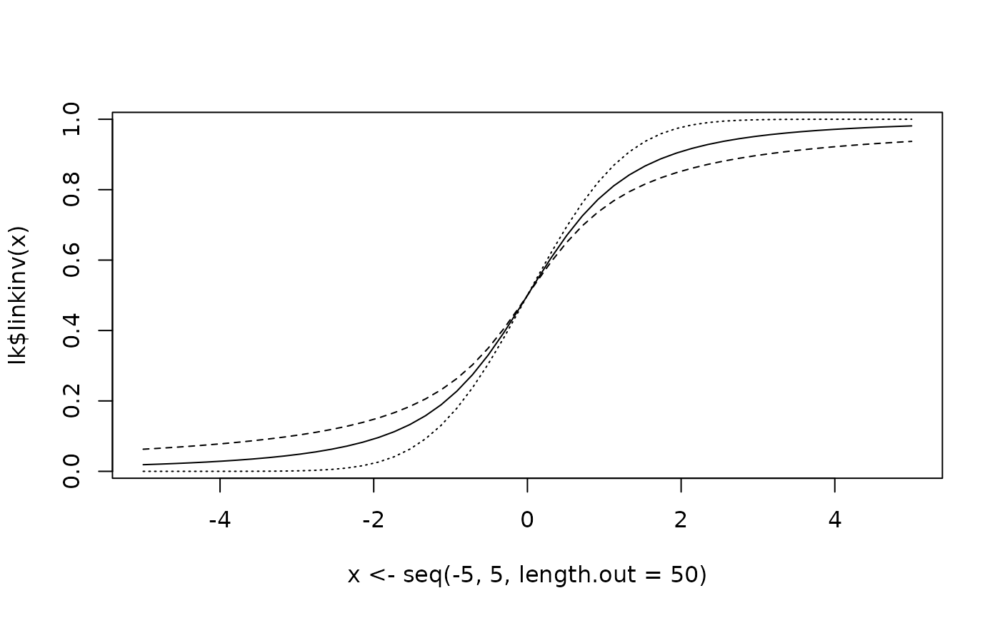
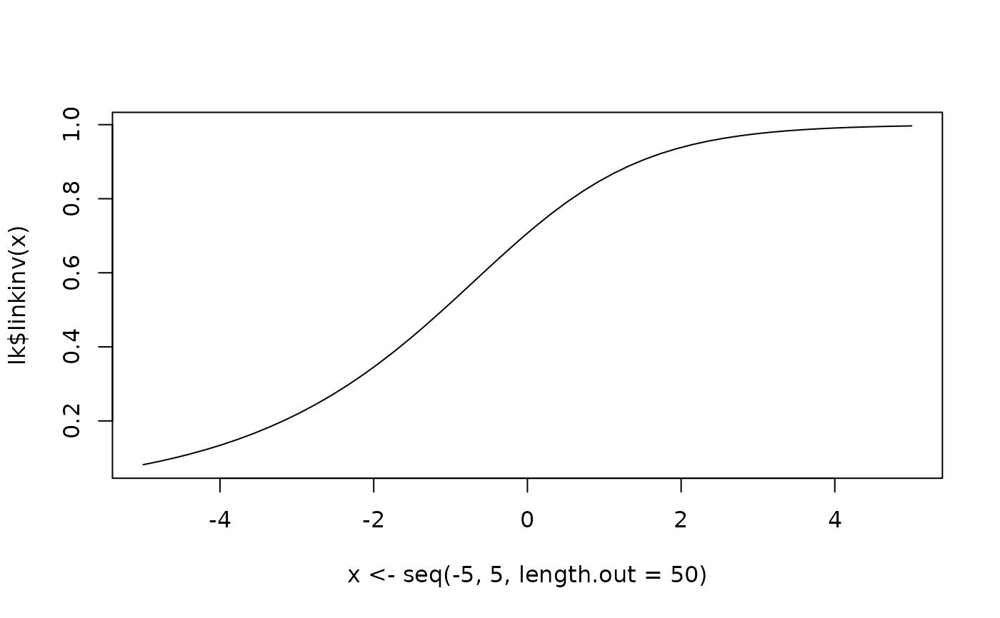
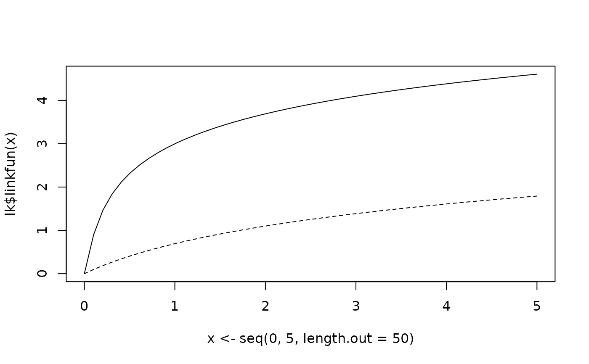

get.link() creates a link function object (inheriting from "link-glm") capable of handling parametric transformations such as Box-Cox, Yeo-Johnson, and shifted logarithms.
This function serves as a wrapper and extension to make.link().
Arguments
- link
a character string naming the link function: "log1p", "shifted.log", "shifted.identity", "box-cox", "box-cox2", or "yeo-johnson". Standard links (e.g., "logit", "probit", "log") are passed to
stats::make.link().- ...
named arguments passed to the specific link generation logic. See Details for available parameters and defaults.
- simplify
logical. If
TRUE(default), the function returns a standard link object or recursively callsget.linkwhen parameters equate to a simpler and more computationally efficient form (e.g.,box-coxwithlambda=0becomeslog).
Value
get.link() returns an object of class "link-glm" (and "parametric.link") containing:
- linkfun
link function \(g(\mu)\).
- linkinv
inverse link function \(g^{-1}(\eta)\).
- mu.eta
derivative \(d\mu/d\eta\).
- valideta
a function checking validity of linear predictors.
- name
name of the link.
Details
The available links and their parameters are:
"log1p": shifted log link \(\eta = \log(\mu + 1)\).
"shifted.log": shifted log link \(\eta = \log(\mu + h)\) with a shift parameter
h(default 1)."shifted.identity": shifted identity link \(\eta = \mu + h\) with a shift parameter
h(default 1)."robit": robit link using the Student's t-distribution CDF. \(\eta = F_{t}^{-1}(\mu, \nu)\) with a degrees of freedom parameter
df(or aliasnu, default 7)."asinh": inverse hyperbolic sine transformation \(\eta = \text{asinh}(\lambda \mu)\) with a scale parameter
lambda(default 1)."scobit": skewed logit link \(\eta = \text{logit}(\mu^{1/\alpha})\). The parameter
alpha(default 1) controls the asymmetry of the tails.alpha=1corresponds to standard logistic regression."box-cox": Box-Cox transformation \(\eta = (\mu^\lambda - 1)/\lambda\) with a power parameter
lambda(default 0)."box-cox2": two-parameter Box-Cox transformation \(\eta = ((\mu + \lambda_2)^{\lambda_1} - 1)/\lambda_1\) with parameters
lambda1(power, default 0) andlambda2(shift, default 1)."yeo-johnson": Yeo-Johnson transformation with a parameter
lambda(default 0). Handles negative values.
Examples
# Standard Box-Cox with lambda = 0.5 (Square root-like)
lk <- get.link("box-cox", lambda = 0.5)
plot(x <- seq(1, 100, length.out = 50), lk$linkfun(x), type = "l")

# Yeo-Johnson with lambda = 1.5 (Handles negative values)
lk <- get.link("yeo-johnson", lambda = 1.5)
plot(x <- seq(-100, 100, length.out = 50), lk$linkfun(x), type = "l")

# Robit link with df=2 (Heavier tails than probit)
lk <- get.link("robit", df = 2)
print(lk)
#> Link function: robit(df = 2)
plot(x <- seq(-5, 5, length.out = 50), lk$linkinv(x), type = "l")
lk <- get.link("robit", df = 1)
cat(lk$name) # cauchit
#> cauchit
points(x, lk$linkinv(x), type = "l", lty = 2L)
lk <- get.link("robit", df = Inf)
cat(lk$name) # probit
#> probit
points(x, lk$linkinv(x), type = "l", lty = 3L)

# Scobit link with alpha=0.5 (Skewed)
lk <- get.link("scobit", alpha = 0.5)
plot(x <- seq(-5, 5, length.out = 50), lk$linkinv(x), type = "l")

# Inverse Hyperbolic Sine (Alternative to log for zero-inflated data)
lk <- get.link("asinh", lambda = 10)
plot(x <- seq(0, 5, length.out = 50), lk$linkfun(x), type = "l")
lk <- get.link("log1p")
points(x, lk$linkfun(x), type = "l", lty = 2L)

# Shifted log simplifies to log1p when h=1
get.link("shifted.log", h = 1) # Returns link="log1p"
#> Link function: log1p
# Box-Cox with lambda=1 simplifies to shifted identity
get.link("box-cox", lambda = 1)
#> Link function: shifted.identity(h = -1)